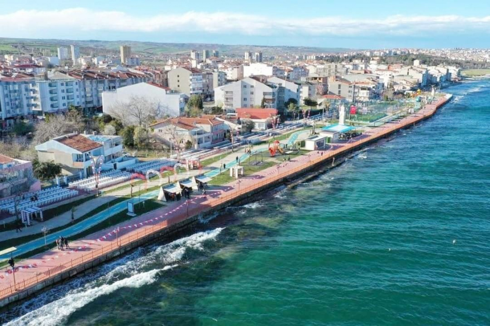
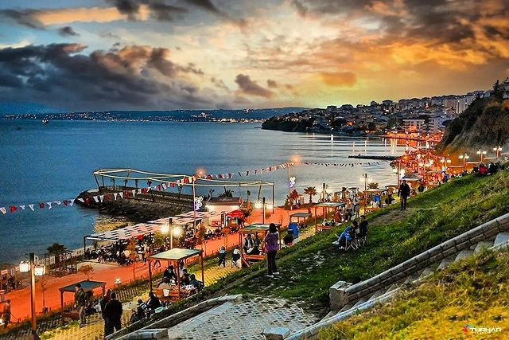

Tekirdağ Sahil Hakkında Genel Bilgiler
Tekirdağ sahili, Marmara Denizi kıyısında uzanan uzun ve geniş bir sahil şeridine sahiptir. Bu sahil, yürüyüş yolları, bisiklet parkurları, restoranlar, kafeler ve çay bahçeleriyle donatılmıştır. Özellikle yaz aylarında, sahil boyunca sıralanan plajlar ve sosyal alanlar, hem yerli halkın hem de turistlerin ilgisini çeker Tekirdağ sahili, sadece denize girmek için değil, aynı zamanda yürüyüş yapmak, bisiklet sürmek ve sosyal etkinliklere katılmak için de ideal bir yerdir. Sahil boyunca uzanan yürüyüş yolları ve parklar, ziyaretçilere doğayla iç içe vakit geçirme imkanı sunar. Sayfanın altında ilgili bazı görselleri bulabilirsiniz.Adres Bilgileri
Adres: Süleymanpaşa/Tekirdağ
Tekirdağ Sahili İlgili Bazı Fotoğraflar
 